철도신호기사 (2021-05-15 기출문제)
1과목: 전자공학
1. 진폭 변조도를 m이라 할 때 m＞1이 되면 변조 일그러짐이 일어나는데 이를 무엇이라 하는가?
- 양변조
- 음변조
- 과변조
- 저변조
(정답률: 76%)

2. 차동증폭기의 CMRR이 40dB이고 동상신호이득 Ac가 0.1일 때 차동신호이득 Ad는 얼마인가?
- 4
- 10
- 40
- 100
(정답률: 68%)
3. 2단으로 구성된 증폭기에서 이득이 10, 잡음지수가 5인 첫 번째단의 증폭기를 이득이 5, 잡음지수가 3인 두 번째단의 증폭기에 연결할 때 종합 잡음지수는 얼마인가?
- 5.2
- 6
- 10.2
- 15
(정답률: 64%)
4. JK플립플롭의 특성표를 참고한 특성방정식으로 옳게 표현한 것은?
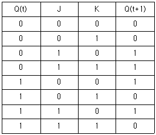
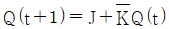
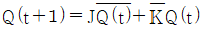
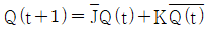
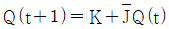
(정답률: 81%)
5. 디엠퍼시스(de-emphasis) 회로에 대한 설명으로 틀린 것은?
- FM 수신기에 이용된다.
- 일종의 적분회로이다.
- 높은 주파수의 출력을 감소시킨다.
- 반송파를 억제하고 양측파대를 통과시킨다.
(정답률: 73%)
6. 바크하우젠(Barkhausen)의 발진조건에서 증폭기의 증폭도 A=10 이고 궤환회로의 궤환비율을 β라고 할 때 β의 값은?
- 0.1
- 1
- 10
- 100
(정답률: 62%)
7. P형 반도체에 대한 설명 중 틀린 것은?
- 4가인 Ge이나 Si에 3가인 Ga, In 등을 넣어 만든다.
- 다수 캐리어가 정공인 불순물 반도체이다.
- 불순물 첨가에 의해 새로운 에너지 준위인 억셉터 준위가 생긴다.
- 불순물을 다량으로 도핑할수록 전기적인 저항이 증가한다.
(정답률: 77%)
8. BJT의 동작상태 중 차단상태는?
- BE 접합 : 순바이어스, BC 접합 : 순바이어스
- BE 접합 : 역바이어스, BC 접합 : 순바이어스
- BE 접합 : 순바이어스, BC 접합 : 역바이어스
- BE 접합 : 역바이어스, BC 접합 : 역바이어스
(정답률: 63%)
9. 정류회로에서 전압변동률 △V는? (단, Vo : 무부하시 출력전압, Vi : 부하 시 출력전압)
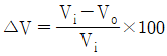
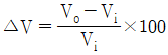
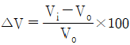
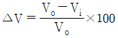
(정답률: 83%)
10. 다음 설명 중 ㉠과 ㉡으로 옳은 것은?
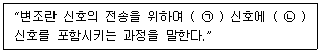
- ㉠ 저주파, ㉡ 저주파
- ㉠ 저주파, ㉡ 고주파
- ㉠ 고주파, ㉡ 고주파
- ㉠ 고주파, ㉡ 저주파
(정답률: 78%)
11. 다음 중 정류회로에서 다이오드를 여러 개 병렬로 접속시킬 경우의 특성은?
- 과전압으로부터 보호할 수 있다.
- 과전류로부터 보호할 수 있다.
- 정류기의 역방향 전류가 감소한다.
- 부하출려겡서 맥동률을 감소시킬 수 있다.
(정답률: 86%)
12. 다음 게이트 회로의 논리식으로 옳은 것은?
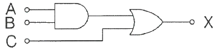
- X = (A + B) + C
- X = A ⦁ B + C
- X = (A + B) ⦁ C
- X = A + B ⦁ C
(정답률: 78%)
13. 다음 회로의 전압이득은? (단, 연산증폭기는 이상적인 소자이다.)
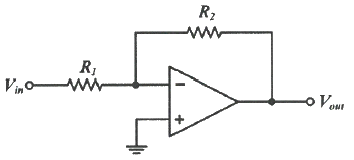
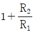
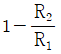
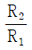
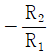
(정답률: 79%)
14. 25℃에서 80W의 손실전력을 가지는 실리콘 트랜지스터가 있다. 이 트랜지스터 케이스의 온도가 135℃라면 손실전력은 몇 W 인가? (단, 25℃ 이상에서 손실전력의 감소비율은 0.5 W/℃ 이다.)
- 15
- 25
- 35
- 55
(정답률: 73%)
15. 이미터 접지 증폭기에서 컬렉터 역포화 차단전류 ICO = 0.1mA, 베이스 전류 IB = 0.2mA 일 때, IC는 약 몇 mA 인가? (단, 트랜지스터의 β = 50 이다.)
- 10.2
- 12.5
- 15.1
- 24.3
(정답률: 65%)
16. D플립플롭으로 구성된 4비트 시프트 레지스터는 초기화상태 이후 Clock 상승 모서리에서 동기가 되어 동작한다. 4번째(㉠) 클럭 신호와 5번째(㉡) 클럭 신호에서 출력될 Q0, Q1, Q2, Q3 값을 차례대로 표현했을 때 ㉠, ㉡값을 각각 올바르게 표현하면? (단, 회로는
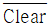
입력 신호로, Q0, Q1, Q2, Q3를 “0000”으로 초기화 하였다.)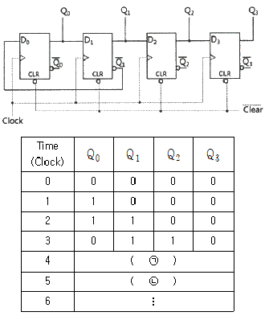
- ㉠ 1011, ㉡ 0101
- ㉠ 0011, ㉡ 1001
- ㉠ 1011, ㉡ 1101
- ㉠ 0011, ㉡ 0001
(정답률: 61%)
17. 다음 논리회로 중 팬 아웃(fan-out) 수가 가장 많은 회로는?
- CMOS
- TTL
- RTL
- DTL
(정답률: 79%)
18. 다음 중 정현파 발진기가 아닌 것은?
- 수정발진기
- 블로킹발진기
- LC발진기
- RC발진기
(정답률: 85%)
19. 전원 주파수 60Hz를 사용하는 정류회로에서 120Hz의 맥동 주파수를 나타내는 회로 방식은?
- 단상 반파 정류
- 단상 전파 정류
- 3상 반파 정류
- 3상 전파 정류
(정답률: 67%)
20. 정전압회로에 주로 사용되는 다이오드는?
- 채널 다이오드
- 에사키 다이오드
- 터널 다이오드
- 바렉터 다이오드
(정답률: 68%)
2과목: 회로이론 및 제어공학
21. 그림과 같은 함수의 라플라스 변환은?
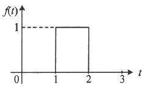
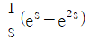
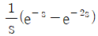
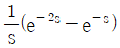
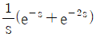
(정답률: 60%)
22. 전압
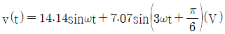
의 실효값은 약 몇 V 인가?- 3.87
- 11.2
- 15.8
- 21.2
(정답률: 56%)
23. 정상상태에서 t = 0 초인 순간에 스위치 S를 열었다. 이 때 흐르는 전류 i(t)는?
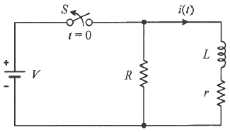
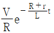
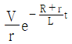
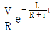
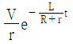
(정답률: 64%)
24. 그림 (a)와 같은 회로에 대한 구동점 임피던스의 극점과 영점이 각각 그림 (b)에 나타낸 것과 같고 Z(0) = 1 일 때, 이 회로에서 R(Ω), L(H), C(F)의 값은?
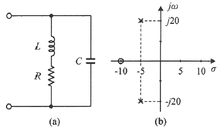
- R = 1.0Ω, L = 0.1H, C = 0.0235F
- R = 1.0Ω, L = 0.2H, C = 1.0F
- R = 2.0Ω, L = 0.1H, C = 0.0235F
- R = 2.0Ω, L = 0.2H, C = 1.0F
(정답률: 53%)
25. 그림과 같은 평형 3상회로에서 전원 전압이 Vab = 200(V)이고 부하 한상의 임피던스가 Z = 4 + j3(Ω)인 경우 전원과 부하사이 선전류 Ia는 약 몇 A 인가?
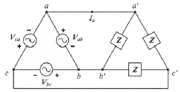
- 40√3 ∠36.87°
- 40√3 ∠-36.87°
- 40√3 ∠66.87°
- 40√3 ∠-66.87°
(정답률: 54%)
26. 상의 순서가 a-b-c인 불평형 3상 전류가 Ia = 15 + j2(A), Ib = -20 – j14(A), Ic = -3 + j10(A) 일 때 영상분 전류 I0는 약 몇 A 인가?
- 2.67 + j0.38
- 2.02 + j6.98
- 15.5 – j3.56
- -2.67 – j0.67
(정답률: 55%)
27. 회로에서 저항 1Ω에 흐르는 전류 I(A)는?
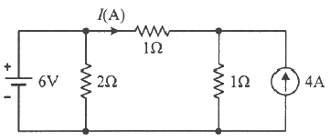
- 3
- 2
- 1
- -1
(정답률: 50%)
28. 선간전압이 150V, 선전류가 10√3 A, 역률이 80%인 평형 3상 유도성 부하로 공급되는 무효전력(var)은?
- 3600
- 3000
- 2700
- 1800
(정답률: 59%)
29. 무한장 무손실 전송선로의 임의의 위치에서 전압이 100V 이었다. 이 선로의 인덕턴스가 7.5μH/m이고, 커패시턴스가 0.012μF/m 일 때 이 위치에서 전류(A)는?
- 2
- 4
- 6
- 8
(정답률: 54%)
30. 파형이 톱니파인 경우 파형률은 약 얼마인가?
- 1.155
- 1.732
- 1.414
- 0.577
(정답률: 58%)
31. 다음과 같은 상태방정식으로 표현되는 제어시스템의 특성방정식의 근(s1, s2)은?
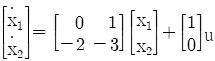
- 1, -3
- -1, -2
- -2, -3
- -1, -3
(정답률: 49%)
32. 전달함수가
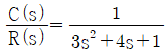
인 제어시스템의 과도 응답 특성은?- 무제동
- 부족제동
- 임계제동
- 과제동
(정답률: 58%)
33. 그림과 같은 제어시스템의 폐루프 전달함수
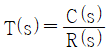
에 대한 감도 STK는?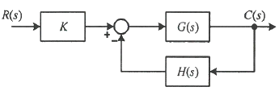
- 0.5
- 1
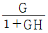
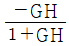
(정답률: 52%)
34. 그림의 블록선도와 같이 표현되는 제어시스템에서 A = 1, B = 1 일 때, 블록선도의 출력 C는 약 얼마인가?
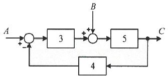
- 0.22
- 0.33
- 1.22
- 3.1
(정답률: 60%)
35. 그림과 같은 제어시스템이 안정하기 위한 k의 범위는?
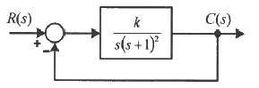
- k ＞ 0
- k ＞ 1
- 0 ＜ k ＜ 1
- 0 ＜ k ＜ 2
(정답률: 49%)
36. 다음 논리회로의 출력 Y는?
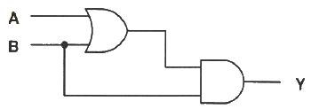
- A
- B
- A + B
- A ⦁ B
(정답률: 58%)
37. 재어요소가 제어대상에 주는 양은?
- 동작신호
- 조작량
- 제어량
- 궤환량
(정답률: 49%)
38. 전달함수가
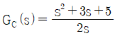
인 제어기가 있다. 이 제어기는 어떤 제어기인가?- 비례 미분 제어기
- 적분 제어기
- 비례 적분 제어기
- 비례 미분 적분 제어기
(정답률: 48%)
39. 제어시스템의 주파수 전달함수가 G(jω) = j5ω 이고, 주파수가 ω = 0.02 rad/sec 일 때 이 제어시스템의 이득(dB)은?
- 20
- 10
- -10
- -20
(정답률: 63%)
40. 함수 f(t) = e-at의 z 변환 함수 F(z)는?
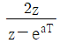
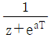
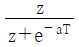
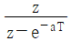
(정답률: 64%)
3과목: 신호기기
41. 보통 농형 유도전동기와 비교한 2중 농형 유도전동기의 특징은?
- 기동 전류가 크고 기동 토크도 크다.
- 기동 전류가 적고 기동 토크도 적다.
- 기동 전류가 크고 기동 토크도 적다.
- 기동 전류가 적고 기동 토크도 크다.
(정답률: 63%)
42. 어떤 변압기의 1차 환산임피던스 Z12 = 400Ω 이고, 이것을 2차로 환산하면 Z21 = 1Ω 이 된다. 2차 전압이 300V 이면 1차 전압(V)은?
- 4500
- 6000
- 7500
- 8000
(정답률: 75%)
43. 유도전동기에서 비례추이하지 않는 것은?
- 토크
- 1차 전류
- 출력
- 역률
(정답률: 49%)
44. 단상 반파 정류로 직류전압 110V를 얻으려고 한다. 다이오드에 걸리는 최대역전압(PIV)은 약 몇 V 인가?
- 345
- 314
- 298
- 282
(정답률: 59%)
45. 건널목경보기에서 경보등의 등당 점멸횟수의 조정범위로 옳은 것은?
- 20 ± 10회
- 30 ± 10회
- 40 ± 10회
- 50 ± 10회
(정답률: 57%)
46. 보호기기의 접지에 대한 설명으로 틀린 것은?
- 건널목 제어자용 보안기는 레일에 접지할 수 있으며 레일접지는 기점을 등으로 하여 우측레일로 한다.
- 보안기의 접지선은 접지동선(F-GV) 10mm2을 사용한다.
- 교류전원 측에 사용하는 선조변압기의 혼촉방지판 접지저항은 10Ω이하로 한다.
- 철제 케이블랙을 사용한 경우에는 천정벽 등과 접촉하는 부분에 비닐판 등으로 절연한다.
(정답률: 53%)
47. 삽입형 계전기에서 1AUR이 의미하는 것은?
- 1A 신호기의 시소계전기
- 1A 신호기의 조사계전기
- 1A 신호기의 신호제어계전기
- 1A 신호기의 소등검지계전기
(정답률: 79%)
48. 철도 건널목경보장치에서 건널목 제어자 2420형의 발진주파수(kHz) 범위는?
- 18~22
- 38~42
- 58~62
- 78~82
(정답률: 64%)
49. 신호용 계전기 종류에서 직류 무극 궤도계전기의 접점수는?
- N2R2
- N4R4
- NR4
- NR6
(정답률: 39%)
50. 변압기에서 전압변동률을 ε, 퍼센트 저항강하를 p라 할 때 이들 사이의 관계는? (단, 역률은 100% 이다.)
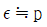
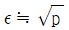
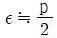
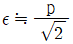
(정답률: 69%)
51. 전동차단기에서 장대형 전동차단기의 정격전압(V)은?
- AC 24 V
- AC 240 V
- DC 240 V
- DC 24 V
(정답률: 73%)
52. 전기선로전환기(MJ81형)를 사용하여 선로를 전환할 경우 선로전환기의 전환력 범위는?
- 100~200kg
- 200~400kg
- 400~600kg
- 600~800kg
(정답률: 69%)
53. 변압기에서 2차 측을 단락하고 1차 측에 저전압을 가하여 1차 전류가 1차 정격전류와 같도록 조정했을 때의 1차 입력은?
- 임피던스 와트
- 철손
- 정격용량
- 전부하시의 전손실
(정답률: 69%)
54. 전기 선로전환기 운전 중에 콘덴서 회로가 단선될 경우 전동기의 동작 상태는?
- 계속 회전한다.
- 회전 방향이 달라진다.
- 정지 후 다시 동작한다.
- 선로전환기 동작이 정지된다.
(정답률: 68%)
55. 직류 전동기의 속도 제어법이 아닌 것은?
- 2차 여자법
- 계자 제어법
- 전압 제어법
- 저항 제어법
(정답률: 73%)
56. 전기 선로전환기에서 전동기의 회전속도를 감속하고 강한 회전력을 전달하기 위하여 설치되는 것은?
- 마찰연축기
- 감속기어장치
- 전환쇄정장치
- 회로제어기
(정답률: 71%)
57. 직류 발전기에서 전기자 반작용을 방지하기 위한 보상권선의 전류 방향은?
- 전기자 권선의 전류방향과 같다.
- 계자 권선의 전류방향과 같다.
- 계자 권선의 전류방향과 반대이다.
- 전기자 권선의 전류방향과 반대이다.
(정답률: 59%)
58. 단상 유도 전동기의 기동방법 중 기동 토크가 가장 큰 것은?
- 분상 기동형
- 반발 기동형
- 반발 유도형
- 콘덴서 기동형
(정답률: 72%)
59. 사이리스터의 명칭에 관한 설명 중 틀린 것은?
- SCR은 역저지 3극 사이리스터이다.
- SSS는 2극 쌍방향 사이리스터이다.
- SCS는 역저지 2극 사이리스터이다.
- TRIAC는 3극 쌍방향 사이리스터이다.
(정답률: 60%)
60. 건널목 전동차단기에는 어떤 전동기가 주로 사용되는가?
- 직류 직권전동기
- 직류 분권전동기
- 단상 유도전동기
- 직류 복권전동기
(정답률: 68%)
4과목: 신호공학
61. 철도신호 정위 선정 중 무현시(소등) 정위식 신호기는?
- 중계신호기
- 엄호신호기
- 입환신호기
- 유도신호기
(정답률: 60%)
62. 자동폐색장치에 대한 설명으로 틀린 것은?
- 복선구간의 신호현시는 정지 정위식을 원칙으로 한다.
- 폐색구간의 열차검지는 궤도회로 및 악셀 카운터 등을 설비하여 검지하는 것으로 한다.
- 신호현시 제어는 주파수를 이용한 제어방식 또는 전자제어방식으로 한다.
- 폐색구간에 설비하는 궤도회로는 무절연 방식의 궤도회로를 설치한다.
(정답률: 63%)
63. 접근쇄정의 해정시분은 출발신호기인 경우 얼마로 설정하는가?
- 30초 ± 10%
- 60초 ± 10%
- 90초 ± 10%
- 120초 ± 10%
(정답률: 45%)
64. 원방신호기의 확인거리는 몇 m 이상인가? (단, 지상신호(ATS) 전용구간인 경우이다.)
- 100
- 200
- 400
- 600
(정답률: 47%)
65. 화물열차의 비상제동거리 계산식으로 옳은 것은?
(정답률: 41%)
66. 경부고속철도에서 사용하는 ATC 장치에서 궤도회로에 흐르는 연속정보에 대한 설명으로 틀린 것은?
- 실행속도
- 폐색구배
- 예고속도
- 절대정지구간 제어정보
(정답률: 64%)
67. 100km/h의 여객열차의 안전을 위하여 ATS를 설치하려고 한다. 설치위치로 옳은 것은?
- 신호기 외방 723m 지점
- 신호기 내방 866m 지점
- 신호기 외방 566m 지점
- 신호기 내방 623m 지점
(정답률: 56%)
68. 다음 중 고속선의 운전취급실에서 취급된 제어명령의 연동 논리를 처리하는 장치는?
- 역정보전송장치(FEPOL)
- 연동처리장치(SSI)
- 선로변 기능모듈(TFM)
- 컴퓨터 지원 유지보수 시스템(CAMS)
(정답률: 63%)
69. 시스템 전기연동장치의 R-2형 계전기랙의 계전기 수용 수량은?
- 84개
- 126개
- 168개
- 360개
(정답률: 65%)
70. 다음 연동장치에서 전원의 극성에 따라 계전기의 여자방향이 다른 계전기를 사용하는 회로는?
- 진로선별회로
- 진로조사회로
- 전철제어회로
- 진로쇄정회로
(정답률: 34%)
71. 삽입형 직류 무극 선조계전기의 선륜저항이 140Ω일 때 정격전류(A)는 약 얼마인가?
- 0.13
- 0.17
- 0.21
- 0.25
(정답률: 63%)
72. 열차집중제어장치(CTC)의 효과에 해당하지 않는 것은?
- 선로용량 증대 및 안전도 향상
- 열차운전 정리의 신속 및 정확화
- 폐색구간이 필요 없고 여객안내 자동화
- 신호제어설비의 고장파악 용이
(정답률: 61%)
73. 신호기에 진행을 지시하는 신호를 현시한 후 신호기의 바깥쪽 일정구간에 열차가 진입하였을 경우 해당 진로의 선로전환기 등을 전환할 수 없도록 하는 쇄정은?
- 보류쇄정
- 시간쇄정
- 폐로쇄정
- 접근쇄정
(정답률: 43%)
74. CTC 장치에서 LDTS의 주요 구성 요소가 아닌 것은?
- CPU모듈
- 출력모듈
- LAN
- 입력모듈
(정답률: 75%)
75. 차상선로전환기의 조작리버는 차상선로전환기로부터 몇 m 지점에 설치하여야 하는가?
- 대향방향 40m 지점
- 배향방향 40m 지점
- 대향방향 30m 지점
- 배향방향 30m 지점
(정답률: 60%)
76. 크로싱에 대한 설명으로 틀린 것은?
- 크로싱은 포인트부, 리드부와 함께 분기기의 구성 부분이다.
- 크로싱의 종류에는 가동 크로싱과 고정 크로싱이 있다.
- 크로싱 각이 클수록 크로싱 번호가 크다.
- 크로싱은 분기기에서 궤간선이 서로 교차하는 부분이다.
(정답률: 59%)
77. 연동장치 정위쇄정에 대한 설명으로 틀린 것은?
- 한족의 정자를 반위로 하면 다른 쪽의 정자는 정위로 쇄정되는 상호연쇄
- 장내신호정자를 반위로 하면 21호 전철기를 정위로 쇄정하는 연쇄
- 21호 전철기를 반위로 하고 장내신호정자를 반위로 전환하므로 쇄정되는 연쇄
- 21호 전철기가 반위로 되어 있으면 장내신호정자를 반위로 할 수 없는 연쇄
(정답률: 48%)
78. 상치신호기 설치방법에 대한 설명으로 틀린 것은?
- 선로의 상부 또는 우측에 반드시 설치한다.
- 선로의 곡선부, 터널 내, 교량 등은 가급적 피해서 설치한다.
- 자동구간에 있어서 소정의 운전시격으로 운전할 수 있는 위치에 설치한다.
- 전차선 절연구분장치와 신호기와의 관계를 감안하여 운전상 지장이 없는 곳에 설치한다.
(정답률: 65%)
79. 고속철도 UM71 궤도회로장치의 현장 선로 간에 일정 간격으로 설치된 보상용 콘덴서가 하는 역할은?
- 송전 및 착전 전압 값을 다르게 한다.
- 궤도송신기와 수신기 사이의 임피던스를 증가시킨다.
- 선로의 인덕턴스를 보상하여 전송을 개선한다.
- 고조파 성분을 제한한다.
(정답률: 61%)
80. MJ81형 전기 선로전환기의 정격에 대한 설명으로 틀린 것은?
- 사용전원 : AC 220/380V, 3상
- 전환시간 : 5초
- 동정 : 110mm ~ 260mm
- 분기기 : F10 ~ F15
(정답률: 52%)